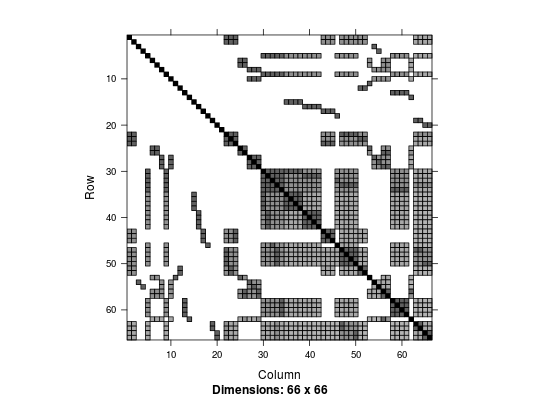
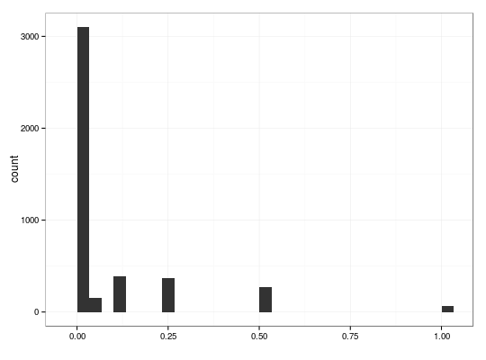

plotKinship2(x, y = c("image", "hist"))imageKinship2(x)histKinship2(x)
"image" and "hist".
The default value is "image".The main function that calls imageKinship2 or histKinship2
depending on value of y argument.
imageKinship2 function calls image function from Matrix package.
histKinship2 function plots a histogram based on ggplot2 package.
# load `kin` kinship matrix from `dat50` data set data(dat50) kin2 <- 2* kin # double kinship matrix plotKinship2(kin2) # equivalent to `imageKinship2(kin2)`
plotKinship2(kin2, "hist") # equivalent to `histKinship2(kin2)`